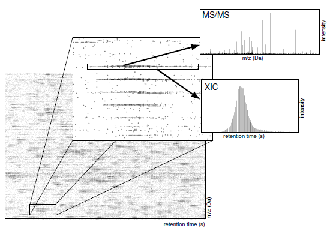
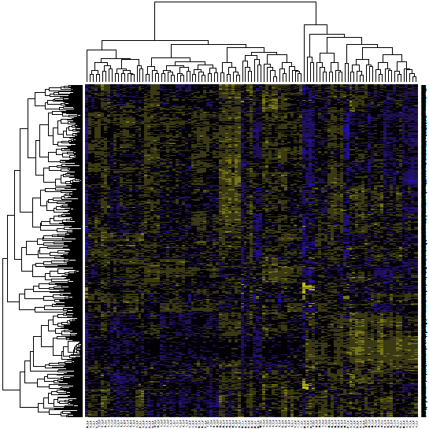

PVIEW: Princeton LC-MS/MS Data Viewer and Analyzer
 |
 |
This software implements the algorithms described in the
following papers. Please cite these papers if you find PVIEW helpful for your work. Thanks!!!
- Zia Khan, Joshua S. Bloom, Benjamin A. Garcia, Mona Singh, and Leonid Kruglyak. Protein Quantification Across Hundreds of Experimental Conditions. Proceedings of the National Academy of Sciences. September 15, 2009 vol. 106 no. 37 15544-15548.
- Accurate proteome-wide protein quantification from high-resolution 15N mass spectra. Z. Khan(*), S. Amini(*), J. S. Bloom, C. Ruse, A. A. Caudy, L. Kruglyak, M. Singh, D. H. Perlman, and S. Tavazoie. Genome Biology 2011, 12:R122. (*) equal contribution. Supplemental data is available here.
You can also read about the basic idea here:
PVIEW has also been used successfully in the following papers:
-
Impact of regulatory variation from RNA to protein,
A. Battle(*), Z. Khan(*), S. H. Wang(*), A. Mitrano, M. J. Ford, J. K. Pritchard, Y. Gilad. Science 6 February 2015:
Vol. 347 no. 6222 pp. 664-667. (*) equal contribution
-
Stoichiometry of site-specific lysine acetylation in an entire proteome, J. Baeza, J. A. Dowell, M. J. Smallegan, J. Fan,
D. Amador-Noguez, Z. Khan and J. M. Denu. August 1, 2014 The Journal of Biological Chemistry, 289, 21326-21338.
- Primate Transcript and Protein Expression Levels Evolve Under Compensatory Selection Pressures. Z. Khan, M. J. Ford, D. A. Cusanovich, A. Mitrano, J. K. Pritchard, Y. Gilad, Science. 29 November 2013: Vol. 342 no. 6162 pp. 1100-1104.
- Quantitative Measurement of Allele-Specific Protein Expression in a Diploid Yeast Hybrid by LC-MS. Z. Khan, J. Bloom, S. Amini, M. Singh, D. Perlman, A. Caudy, L. Kruglyak. Molecular Systems Biology (2012), 8:602. Supplemental data is available here.
- Global secretome analysis identifies novel mediators of bone metastasis. M. A. Blanco, A. LeRoy, Z. Khan, M. M. Aleckovic, B. M. Zee, B. A. Garcia, and Y. Kang. (2012) Cell Research (2012) 22:1339-1355. Highlight: Cell Research
- BclAF1 restriction factor is neutralized by proteasomal degradation and microRNA repression during human cytomegalovirus infection S. H. Lee, R. F. Kalejta, J. Kerry, O. J. Semmes, C. M. O'Connor, Z. Khan, B. A. Garcia, T. Shenk, and E. Murphy. Proceedings of the National Academy of Sciences, 109: 9575-9580, 2012.
- Direct targeting of Sec23a by miR-200s influences cancer cell secretome and promotes metastatic colonization
M Korpal. F. M. Buffa, T. Ibrahim, M. A. Blanco, T. Celia-Terrassa, L. Mercatali, Z. Khan(*), H. Goodarzi, Y. Hua,Y. Wei, G. Hu, B. A. Garcia, J. Ragoussis, D. Amadori, A. L. Harris, Y. Kang. Nature Medicine 17, 1101-1108 (2011).
PVIEW has a number of useful features
- full GUI with cross platform support (Windows, MacOS, Linux)
- support for ETD fragmentation
- isotope labeled heavy vs. light quantification (e.g. SILAC)
- 15N heavy vs. light quantification
- isotope labeled heavy vs. medium vs. light (e.g. pulsed SILAC) quantification
- nonlinear alignment label-free quantification
- label free XIC-based quantification based on MS/MS DB search results
- XIC-based quantification where XICs are cross referenced based on their assigned peptide sequence
- integrated MS/MS database search
- internal reverse concatenated decoy database construction
- integrated FDR and q-value estimation using a reverse concanted decoy database
- support for external search engines (e.g. Mascot, SEQUEST, X! Tandem) via the PepXML file format
- protein grouping to account for isoforms and peptides that occur in many proteins
- completely open source
- support for data from Orbitrap, FTICR, and high resolution QTOF instruments
- tight integration with the R statistical programming language
- multi-threaded, PVIEW can take advantage of multiple CPU cores on your computer
- PVIEW is fast because it relies on space partitioning data structures
Sign up for the Google Groups email list by clicking here PVIEW Google Group.
System Requirements: For full data visualization capabilities, we recommend a
computer with 8GB of RAM or more and a 64-bit operating system.
Source Code
Click here to download (pview_src_17jul2014.zip).
We request you to read the copyright notice at the bottom of this web page before downloading the
software.
PVIEW requires Qt version 5.0.x or newer and the Expat XML Parser version 2.0.1 or newer. The R Statistical Programming Language is highly recommended for data analysis.
Please read the included README for instructions on how
to compile the source code for your operating system.
Binaries
For your convenience, we've created binaries for Windows.
If you're unable to run PVIEW, please try installing the Visual
C++ 2008 Redistributable package (included as vcredist_x86.exe, 32-bit, or
vcredist_x64_2012.exe, 64-bit, in the .zip files above).
Column Descriptions
Below are column descriptions for
the main output file for isotope-labeled quantification for 2
labels:
- ratio.id
- identifier of a specific XIC pair used for quantification
- group.id
- identifier associated with a particular group of proteins
- protein.group
- protein group, based on peptides identified, the most specific protein IDs possible
- protein.group.nfrags
- number of fragments within 6-40aa for each member of the protein group, useful for absolute quantification
- group.N
- number of ratios in each protein group
- group.log2.HL.ratio
- median heavy/light ratio for protein group
- group.c
- isotope pair condition, pulled from directory structure
- group.r
- isotope pair replicate, pulled from directory structure
- group.i
- isotope pair instrument run, pulled from file name
- L.mz
- m/z of light XIC in isotope pair
- L.rt
- retention time of light XIC in isotope pair
- H.mz
- m/z of heavy XIC in isotope pair
- H.rt
- retention time of heavy XIC in isotope pair
- log2.HL.ratio
- log2(heavy/light) ratio for pair pair
- log2.xicH
- area under of heavy XIC
- log2.xicL
- area under of light XIC
- log2.xicHL.avg
- average of area under XICs
- ms2.scanNum
- spectrum scan number for MS/MS ID
- ms2.mz
- precursor m/z for MS/MS spectrum
- ms2.score
- MS/MS search score
- ms2.qvalue
- q-value or FDR corrected significance for search result
- ms2.charge
- precursor charge of MS/MS spectrum
- ms2.protein
- proteins from which the search result can originate from, separated by ||||, use strsplit in R
- ms2.protein.nfrags
- number of fragments in 6-40aa range, useful for absolute quantification
- ms2.seq
- peptide sequences assigned to this isotope pair
- ms2.missedcleaves
- number of missed cleaves in peptide match
- ms2.ppm.error
- precursor mass error in PPMs
- mz.theory
- theoretical m/z for the peptide match
- ms2.Nmods
- number of variable modifications in peptide match
- ms2.origin
- XIC from which match was obtained (heavy or light)
- ms2.shared
- set to true if peptide is shared between multiple protein groups
Thermo2PVIEW: Converting .RAW files to PVIEW .mzXML
PVIEW takes only centroided mzXML files as input. For
ThermoFisher LTQ-Orbitrap and LTQ-FTICR instruments, we recommend
you collect the MS1 scans in profile mode and MS2 scans in
centroid mode. If the data files are too big, centroid MS1 and
centroid MS2 work just as well.
For your convenience, we provide a utility we call
Thermo2PVIEW that will convert a directory of ThermoFisher
LTQ-Orbitrap or LTQ-FTICR .RAW files into PVIEW compatible .mzXML
files. Click here to download (Windows 64-bit, thermo2pview_win64_17jan2014.zip) the Windows
binary.
In order to use Thermo2PVIEW you need to uncompress the .ZIP
file and run MSFileReaderSetup.exe. Then try running the
Thermo2PVIEW.EXE. If Thermo2PVIEW still doesn't run, try
installing the Visual C++ redistributable package
vcredist_x86.exe.
Thermo2PVIEW uses a library provided by ThermoFisher for
accessing their .RAW files. MSFileReader.
If you want to see the source code of Thermo2PVIEW, you can by clicking here to
download (thermo2pview_src_17jan2014.zip).
mzXML file organization
PVIEW can analyze complex experiments, but it requires you use
a very specific directory structure for your files. First, you
should create a directory with your experiment name
(e.g. MyExperiment). In this folder, you should copy FASTA files
containing the amino acid sequence information for your
contaminant proteins, organismal proteins, and any other proteins
you expect. These are merged into one single data base
automatically. NOTE: No reverse/decoy databases are necessary
PVIEW constructs them automatically!
MyExperiment/contaminants.fasta
MyExperiment/my_organism_proteins.fasta
MyExperiment/my_other_proteins_proteins.fasta
For an isotope labeled experiment, lets say that you collect two
experimental conditions relative to a common reference. For each of
those two conditions you collected two replicates and for each
replicate you used two gel or SCX fractions. You will have a total of
8 mzXML files from 8 instrument runs. These files should be organized
as follows:
MyExperiment/Condition1/ReplicateA/ReplicateA_Fraction1.mzXML
MyExperiment/Condition1/ReplicateA/ReplicateA_Fraction2.mzXML
MyExperiment/Condition1/ReplicateB/ReplicateB_Fraction1.mzXML
MyExperiment/Condition1/ReplicateB/ReplicateB_Fraction2.mzXML
MyExperiment/Condition2/ReplicateA/ReplicateA_Fraction1.mzXML
MyExperiment/Condition2/ReplicateA/ReplicateA_Fraction2.mzXML
MyExperiment/Condition2/ReplicateB/ReplicateB_Fraction1.mzXML
MyExperiment/Condition2/ReplicateB/ReplicateB_Fraction2.mzXML
For alignment-based label-free quantification, the directory structure
containing the mzXML files is a little different. lets say you ran 4
replicates of the same sample from condition #1 and four replicates of
another sample from condition #2. Each of the 4 replicates can be
divided into technical replicates consisting of two replicates each.
For this experiment, you can organize the files as follows:
MyExperiment/Condition1/BioRepA/TechRep1.mzXML
MyExperiment/Condition1/BioRepA/TechRep2.mzXML
MyExperiment/Condition1/BioRepB/TechRep1.mzXML
MyExperiment/Condition1/BioRepB/TechRep2.mzXML
MyExperiment/Condition2/BioRepA/TechRep1.mzXML
MyExperiment/Condition2/BioRepA/TechRep2.mzXML
MyExperiment/Condition2/BioRepB/TechRep1.mzXML
MyExperiment/Condition2/BioRepB/TechRep2.mzXML
PVIEW will align the technical replicates first and then it will align
the biological replicates. Last, it will align across conditions.
PepXML External Search Engine Support
PVIEW has an internal search engine, but also allows you to
import search results from external search engines using the
PepXML file format. In order to load PepXML files, create an
additional directory under MyExperiment called pepxml.
MyExperiment/pepxml
In this directory put all of your validated PepXML files.
MyExperiment/pepxml/validated1.pep.xml
MyExperiment/pepxml/validated2.pep.xml
PVIEW will automatically detect PepXML files in this directory and
load your search results.
You can convert the output of external search engines using
tools from the TPP.
You can download binaries for doing the conversion from here
TPPTools_v4_3.zip.
Keyboard Interface
All interaction with the GUI occurs using the following shortcut
keys. Future versions will have a better mouse driven interface.
- Z Press Z and draw box to zoom into data.
- X Zoom out.
- F Toggle filtered and raw peak data display.
- 1 Press 1 and draw box to select XICs (blue dots with lines) and display in dialog.
- 2 Press 2 and draw box to select XICs and display any contained MS/MS spectra in dialog.
- 3 Press 3 and draw box to select red MS/MS peaks.
- + Increase size of displayed peaks.
- - Decrease size of displayed peaks.
- R Cycle through range query region used for filtering and XIC construction
- G Display graph used to build XICs. Only works for filtered peak data.
- A Show region used for aligning to a reference instrument run or reference run set.
- P Display the retention time range used to group XICs across replicates.
- S Turn XIC display on and off. Also shows MS/MS IDs.
- I Display regions used to group XICs in stable-isotope mode or regions used to filter bad XICs in label-free mode
- O Display positions of grouped XICs across replicates and conditions
Algorithm Options and Parameters
Algorithm options and parameters are described below based
organized by tab in the "Data Load Configuration" dialog box. The
parameters descriptions are organized by tab. A lot of these
parameters are in PPMs. Note that that ppm * 1e-6 * m/z = Da.
Data These parameters control how much of the data should
be loaded and how many CPUs to use to load the data. If you have a
4-core computer set the load threads parameter to 4!
- number of CPU cores Number of CPUs to use to load and process the data.
- quantification mode isotope labeled or a label-free quantification modes
- keep raw peaks Keep raw peak data in memory.
- keep filtered peaks Keep filtered peaks.
- keep XIC peaks Keep chromatogram peaks (2d peaks).
- load MS/MS data Load MS/MS fragmentation spectra.
- keep MS/MS spectra After database search, keep MS/MS spectra in memory
- Run processing algorithms Run algorithms or just serve as a viewer.
XICs These parameters control aspects of finding XICs in the data. They need adjustment depending on
chromatography, gradient, and instrument type.
- filter delta m/z (ppm) Height of orthogonal range/box query used to filter noise peaks in ppms.
- filter delta time Width of orthogonal range query used to filter noise peaks.
- peak threshold Minimum number of peaks returned in range queried to keep peak as signal.
- log10(I) histogram threshold log10(I) histogram threshold fraction
- XIC delta time Width of orthogonal range query used to construct XIC graph.
- XIC delta m/z (ppm) Height of orthogonal range query used to construct XIC graph.
- XIC min Minimum length in seconds of an XIC.
- XIC max Maximum length in seconds of an XIC.
- isotope tolerance Tolerance used for finding isotopic XICs (in PPMs).
Free These parameters control aspects of label-free quantification.
- align translation Use retention time translation adjustment.
- align nonlinear Perform robust nonlinear alignment.
- align dtime Width in retention of query used to align.
- xic width m/z PPM width of box used to group across runs.
- group delta time Retention time window used for XIC grouping across runs.
- min conditions in group Minimum conditions a XIC must occur in.
- min replicate sets Minimum number of replicates represented by an XIC group (label-free only).
- min instrument runs Minimum number of runs represented by an XIC group (label-free only).
- skip median of median normalization Label free runs are normalized to adjust for differing protein amounts loaded.
Isotope These parameters control aspects of stable
isotope labeled quantification. Add, select, and remove isotope
labels. Click and highlight the isotopes to select those present
in your data. New user-defined isotopes can be added.
- max label count Maximum number of labels per peptide (e.g. account for missed cleaves).
- *skip* normalize isotope ratios do not center the log2 ratio of each isotope pair around zero. Adjusts for loading error.
- use 15N metabolic labeling active 15N pairing
- Description a description for a custom user specified label
- Heavy mass shift A mass shift for a user specified label.
- Medium mass shift A medium mass shift for a user specified label (leave as zero by clocking OK in the shift calculator).
- Amion acids Amino acids that have the custom mass shift.
- Add/Remove Click to add and remove a custom isotope label
MS2 These parameters control database search.
- precursor tolerance +- window in PPMs used for precursor mass
- MS2 tolerance +- window in (ppms or daltons) used for matching fragment peaks
- desired FDR False Discovery Rate (FDR) desired from database search. Estimate using a concatenated reverse decoy databse.
- missed cleavages Missed cuts by selected enzyme
- Lys-C, Trypsin, etc Enzyme used for theoretical digest
- max var modified AAs for variable modifications, this sets the limit on the number of amino acids that
can be modified on a single fragment.
- desired site localization FDR maximum site FDR rate for PTM site localization
Fixed Add, remove, and select fixed modifications. Select
items in modification list to activate. Multiple fixed
modifications can be selected at one time. A new fixed
modification requires the following information:
- Description description of the modification type
- Amino acids character codes of amino acids that are
modified. List them with no spaces in between. Note that #
specifies the protein N-terminus and * specified the protein
C-terminus whereas [ and ] specify the cleavage N-terminus and
C-terminus respectively.
- Mass shift Dalton shift in mass.
- use fixed 15N modifications database search on heavy 15N only labeled data
Variable Add, remove, and select variable modifications. Select items in modification list
to activate the modification. Multiple fixed modifications can be selected at one time.
A new variable modification has to be specified by first entering a description,
then specifying a mass shift.
Once this information is specified, then individual fragment modifications can be entered.
These are specified by entering an abbreviation, effected amino acid codes,
and a mass shift relative to the precursor mass shift. This can be set to zero
by opening the mass calculator just hitting OK.
- Description descriptive name
- Abbreviation an abbreviation for the PTM used in spreadsheet output
- Mass mass shift of the precursor fragment
- Amino acids amino acids codes modified
- Frag. Mass shift shift relative to the precursor mass of the modification.
This is usually zero except in the case of losses. To make this zero click the "..."
- Maximum count This parameter specifies the maximum number of times you can
see this modification on a peptide. If it is 0, this implies it is only limited by the MS/MS search parameters
- +/- Add and remove a fragment modification mass shift.
- Add/Remove Add or remove a user-specified variable modification from the list
Tutorials
In order to learn how to use PVIEW (it's not that hard), we
provide several tutorials below.
Stable Isotope labeled Quantification Tutorial
Stable isotope labeling is currently the least noisy method for
quantification. It works by the introduction of a heavy isotope at
a specific Dalton shift. PVIEW now has initial support for three
labels: heavy, medium, and light.
- Download
(VanHoof2009_subset.zip, 290MB) and unzip a subset of a large
phosphoenriched data set. Note the original RAW files have
already been converted to mzXML and centroided. The full data is
from a the Cell Stem Cell paper Phosphorylation
dynamics during early differentiation of human embryonic stem
cells and can be download from Proteome Commons. It has
the following Tranch hash number:
g8hGaNTX/w5BHBEt9+NwoPQLeenbTK7xNKGFk23dkLpfEsf4IuHCLcXRBUjSwanxykWXwSjW51xGYRTzrLxKNGMkMugAAAAAAABsPg==
- Make note of the directory structure. There are two time
points and only one replicate of each time point in this
subset.
- Run PVIEW. Chose File > Open and select the
VanHoof2009_subset directory that was created when you unzipped
the data set.
- Click through the tabs and make note of a few
parameters. First, under the "Load" tab set the parameter "load
threads" to the number of processors on your computer. Next,
under the "Isotope" tab Lys8 and Arg10 are selected as
labels. The "Use Isotope Mode" box is checked to indicate that
isotope labeled quantification should be used. Under the "MS2"
tab up to 4 variable mods are allowed per peptide and under the
Variable tab each of STY phosphorylation is selected. Note also
that under the "Memory" tab "Keep raw peaks" is unchecked. This
is for systems that have smaller amount of RAM. If you have more
than 4GB of RAM you should check "Keep raw peaks."
- In order to load and process the data click the "Load
data..." button. This will take a few minutes.
- Once
this processing is done you can navigate the data set using the
keyboard commands. If you click on the "Isotope" tab, you will
see a tree view of protein groups. Keep clicking until you see a
tryptic fragment and for that fragment a list of ratios. You can
double click on this ratio and entry and PVIEW will
automatically jump to the corresponding isotope pair in the data
set.
- Next you can save and analyze the data by selecting the
menu item "Isotope Pairs > Save All.." Find a destination
directory and enter "VanHoof2009.txt" Once you do this PVIEW
will generate several tab delimited table files VanHoof2009.txt
(list of isotope pair ratios), VanHoof2009_corr.txt (data for
correlating replicate isotope labeled runs, not really relevant
here), VanHoof2009_internal.txt (data for computing protein
level internal ratio correlations), VanHoof2009_internal_pep.txt
(data for computing peptide level internal ratio correlations),
VanHoof2009_mass_error_ms1.txt (precursor mass error data),
VanHoof2009_mass_error_ms2.txt (MS/MS mass error using b1+ and
y1+ fragment ions), VanHoof2009_table.txt (summary data in
tabular format on a per-protein group basis), and
VanHoof2009_table_pep.txt ( summary data in tabular format on a
per-peptide basis).
- With your version of PVIEW you
should find an R Programming Language script called
reports.R. Copy this into the directory containing all of
the CSV files and run R in that directory. Run the following
commands in R: source("reports.R") to load the script and
isotope.pair.report("VanHoof2009.txt"). Run q() to
quit R.
- Running these R commands will create subdirectory called
VanHoof2009 that will contain several useful
plots. mass_error.pdf and mass_error2.pdf contain the precursor
mass error and product ion mass error distributions
respectively. internal_[30,240]min.pdf and
internal_[30,240]min_Rep1.pdf correlates ratios of two groups of
tryptic fragments from the same protein at the condition and
replicate level. internal_[30,240]min_pep.pdf correlates
duplicate measurements (e.g. different charge state) of the
same peptide in the data. internal_[30,240]min_pep_mod.pdf does the
same thing but for peptides with PTMs. For runs that have replicates of the
same condition, you will also get plots that have the following
name format: corr_xxxx.pdf. These correlate ratios across the
replicates.
- Any of the tab-delimited CSV files can be loaded into a spreadsheet program like
Microsoft Excel. They can also be easily read into the R for statistical analysis
by using the following command data <- read("VanHoof2009_xxx.txt", stringsAsFactors=F).
You can run names("data") to get the column names in each
CSV files.
Orbitrap Velos Data
For fun, I added a tutorial for an isotope labeled data set collected on a Thermo Scientific Orbitrap Velos.
The data set is from the recent paper Super-SILAC mix for quantitative proteomics of human tumor tissue.
- Download (Velos.zip, 1.3GB) and
unzip the data set. I've done the .mzXML conversion for you already
- Run PVIEW. Chose File > Open and select the Velos
directory that was created when you unzipped the data set.
- In order to load and process the data click the "Load data..." button. This will take a few minutes.
- Once this processing is done you can navigate the data set
using the keyboard commands. If you click on the "Isotope" tab,
you will see a tree view of protein groups. Keep clicking until
you see a tryptic fragment and for that fragment a list of
ratios. You can double click on this ratio and entry and PVIEW
will automatically jump to the corresponding isotope pair in the
data set.
- Next you can save and analyze the data by selecting the menu item "Isotope Pairs > Save All.."
Save the data by entering "Velos.txt" in the dialog box.
- With your version of PVIEW you
should find an R Programming Language script called
reports.R. Copy this into the directory containing all of
the CSV files and run R in that directory. Run the following
commands in R: source("reports.R") to load the script and
isotope.pair.report("Velos.txt"). Run q() to
quit R.
In the Velos sub-directory created by the R script, you should see
several useful plots for assessing the data quality.
Alignment-Based Quantification Tutorial
Alignment based quantification is a label-free quantification
technique. Instrument runs are nonlinearly aligned and XICs are
grouped based on their retention time. This allows MS/MS IDS to be
transferred across instrument runs, increasing the number of
proteins and peptides quantified.
- Download (BYRMFoss2007.zip,
1.4GB) and unzip each of these 10 replicates each of yeast
strains RM11-1a and BY4716 from the study Genetic
basis of proteome variation in yeast by Foss et al.
- Make note of the directory structure. Each of the FASTA files
are the project BYRMFoss2007 directory. The ten replicates each
of strain RM11-1a and BY4716 are in the RM and BY subdirectories
respectively.
- Run PVIEW. Chose "File > Open" and select the
BYRMFoss207 directory. It was created when you unzipped
the data set.
- Click through the tabs and make note of a few
parameters. First, under the "Load" tab set the parameter "load
threads" to the number of processors on your computer. Click on
the "Free" tab and notice that "Use align mode" is checked.
This tells PVIEW to align LC-MS/MS runs. Also "align
translation" and "align nonlinear" are checked to perform the
maximum amount of retention time correction. Note that "min cond
thres" is set to 2 requiring that a peptide should XIC occur in
both strains and "Minimum instrument runs" is 5 designating that
the signal occurs in 5 out of the 10 replicate instrument
runs. Note also that under the "Memory" tab "Keep raw peaks" is
unchecked. This is for systems that have smaller amount of
RAM. If you have more than 4GB of RAM you should check "Keep raw
peaks."
- In order to load and process the data click the "Load
data..." button. This will take a few minutes.
- Once this processing is done you can navigate the data set
using the keyboard commands. Try pressing the Z key and drawing
a box. This will zoom into the data. Try hitting the S key to
show the XICs with their IDs. Also try hitting the O key to
show the aligned and grouped XICs across instrument runs.
If you click on the "XIC" tab you will see a tree view of
protein groups. Keep clicking until you see a tryptic fragment
and for that fragment a list of area under the XIC values
under the fragment. Double click on one of these and PVIEW
will automatically jump to the corresponding XICs aligned in
the data set.
- Next, you can save and analyze the data by selecting the
menu item "Label Free > Save CSV.." Find a destination directory
and enter "BYRMFoss2007.txt" Once you do this PVIEW will
generate several tab delimited table files BYRMFoss2007.txt (
per-protein quantification table), BYRMFoss2007_peptides.txt
(per-peptide quantification table), BYRMFoss2007_internal.txt (
ratio correlations between all pairs of conditions),
BYRMFoss2007_mass_error.txt ( precursor mass errors), and
BYRMFoss2007_mass_error_ms2.txt (fragment ion mass errors).
- With your version of PVIEW you
should find an R Programming Language script called
reports.R. Copy this into the directory containing all of
the CSV files and run R in that directory. Run the following
commands in R: source("reports.R") to load the script and
internal.align.report("BYRMFoss2007.txt"). Run q() to
quit R.
- Running these R commands will create subdirectory called
BYRMFoss2007 that will contain several useful
plots. mass_error.pdf and mass_error2.pdf contain the precursor
mass error and product ion mass error distributions
respectively. interal_BY_RM.pdf computes ratios for each tryptic fragment
between two conditions (here strains of yeast). If a protein
has two or more tryptic fragments, it groups the fragment ratios into
two groups and then correlates the two groups.
- Any of the tab-delimited CSV files can be loaded into a spreadsheet program like
Microsoft Excel. They can also be easily read into the R for statistical analysis
by using the following command data <- read("BYRMFoss2007.txt", stringsAsFactors=F).
You can run names("data") to get the column names in each
CSV files.
XIC-based Quantification
For XIC-based quantification, XICs are "cross-referenced" based on
their protein and sequence information across experimental
conditions. These cross referenced XICs are used to fill a table
with quantification values. The analysis of this data proceeds
exactly the same way as alignment-based quantification, except you
need to make sure that both "Use Isotope Mode" and Use Align
Mode are not checked. You can save the output using Label Free >
Save CSV... and use the same scripts to analyze the output. This
mode is particularly useful for cases where you have many gel
fractions per experimental condition and the alignment is not
consistent across these gel fractions.
License
BSD License
Copyright (c) 2014, Princeton University, University of Maryland - College Park
All rights reserved.
Redistribution and use in source and binary forms, with or without
modification, are permitted provided that the following conditions are met:
- Redistributions of source code must retain the above copyright
notice, this list of conditions and the following disclaimer.
- Redistributions in binary form must reproduce the above copyright
notice, this list of conditions and the following disclaimer in the
documentation and/or other materials provided with the distribution.
- Neither the name of Princeton University or University of Maryland - College Park nor the
names of its contributors may be used to endorse or promote products
derived from this software without specific prior written permission.
THIS SOFTWARE IS PROVIDED BY THE COPYRIGHT HOLDERS AND
CONTRIBUTORS "AS IS" AND ANY EXPRESS OR IMPLIED WARRANTIES,
INCLUDING, BUT NOT LIMITED TO, THE IMPLIED WARRANTIES OF
MERCHANTABILITY AND FITNESS FOR A PARTICULAR PURPOSE ARE
DISCLAIMED. IN NO EVENT SHALL PRINCETON UNIVERSITY BE LIABLE FOR
ANY DIRECT, INDIRECT, INCIDENTAL, SPECIAL, EXEMPLARY, OR
CONSEQUENTIAL DAMAGES (INCLUDING, BUT NOT LIMITED TO,
PROCUREMENT OF SUBSTITUTE GOODS OR SERVICES; LOSS OF USE, DATA,
OR PROFITS; OR BUSINESS INTERRUPTION) HOWEVER CAUSED AND ON ANY
THEORY OF LIABILITY, WHETHER IN CONTRACT, STRICT LIABILITY, OR
TORT (INCLUDING NEGLIGENCE OR OTHERWISE) ARISING IN ANY WAY OUT
OF THE USE OF THIS SOFTWARE, EVEN IF ADVISED OF THE POSSIBILITY
OF SUCH DAMAGE.